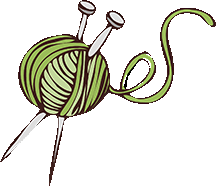

Crafty Gifts Made by ME
 Welcome to my little bit of heaven... Crafting which varies in all types of crafts.
I started off with knitting and crochet (my preference is crochet) then expanded from there.
You will be able to see several of the crafts I've completed as you browse through the site.
Welcome to my little bit of heaven... Crafting which varies in all types of crafts.
I started off with knitting and crochet (my preference is crochet) then expanded from there.
You will be able to see several of the crafts I've completed as you browse through the site.
As of now, most of my project stem for some kind of need going from party invitations, baptism memory gift, wedding guest gift, teacher gifts. Most recently many of my creations have been donated to my church craft fair. Little by little I am growing my skills and increasing the different crafts I have created and working towards selling my crafts.
 Let me step you through the site:
- Project Gallery: Contains a collection of craft project I have crafted/gifted/donated.
- Tips & Tricks: Provides a few tips/tricks that have worked for me or submitted by other crafters.
- Projects: Collection of YouTube videos that have completed the project shown or have inspired me.
- Contact Us: If you have any questions/advice please feel free to reach out.
Project Gallery
Take a look at projects completed or almost completed. Just like everyone else, there are times that you are excited to work on a project and complete the project as plans.
But there are other times where either the interest dwindles or something new comes along that is a must try NOW !!
This collection you will find projects for the following:
This collection you will find projects for the following:
- - Teacher Appreciation
- - Teacher Holiday gifts
- - Theme school days for my kids
- - Church craft fair
- etc...